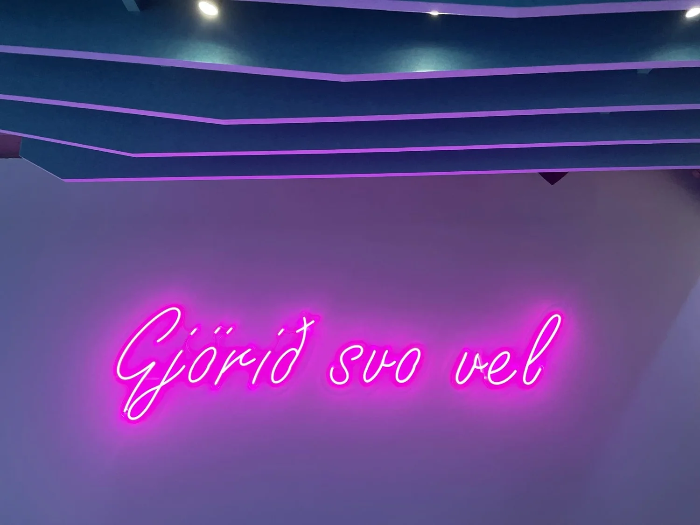

Advania
Vinnurými og matsalur Advania — sterkir litir, góð hljóðvist og fjölbreytt aðstaða fyrir ólíkar vinnustundir dagsins.
Verkefnið snerist um að gefa starfsfólki raunverulegt val: opin vinnurými, skjólgóða bása fyrir samtöl, næðisrými og matsal sem virkar jafnt fyrir hádegismat og uppákomur. Hljóðvist var leiðarstef í efnisvali — klæddir veggfletir, teppi og hljóðdempandi loft halda ró í opnum rýmum.
Litapallettan sækir í vörumerki fyrirtækisins og er notuð markvisst til að aðgreina svæði; djúpfjólubláir samtalsbásar með innfelldri lýsingu urðu eitt af einkennum vinnustaðarins.

